A school with thirty-five years of history and no way to show it. We rebuilt the whole brand from scratch — new mark, new identity, new website, and a term’s worth of photography and film shot on campus.
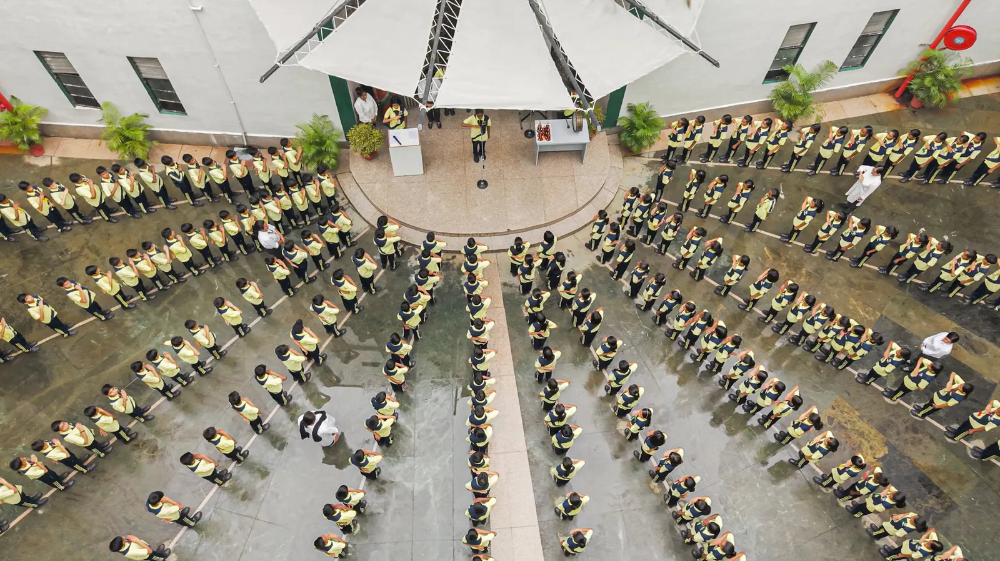
The old crest was a dense circular seal that fell apart below an inch. The new mark reads the same at gate-sign size and at favicon size: branches forming a heart, a gold flame on a torch, and the school’s Sanskrit motto set beneath it.
The site opens on footage from the school — real children, real classroom, filmed the week we shot the campaign. An admissions ticker runs above and below it, because that is the one thing a visiting parent is looking for.
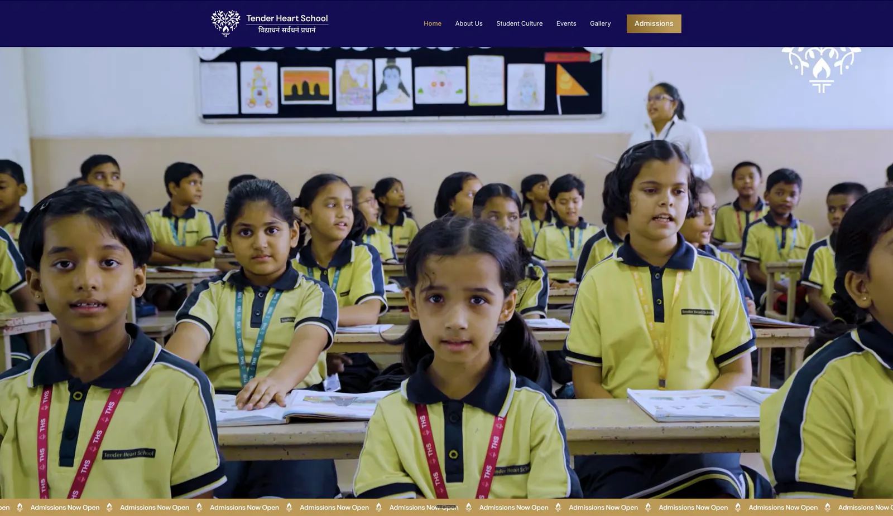
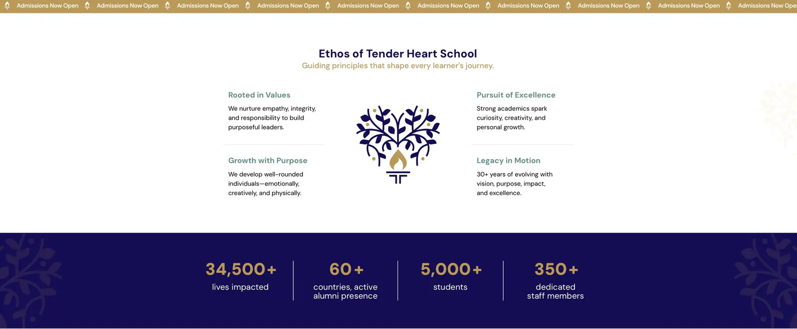
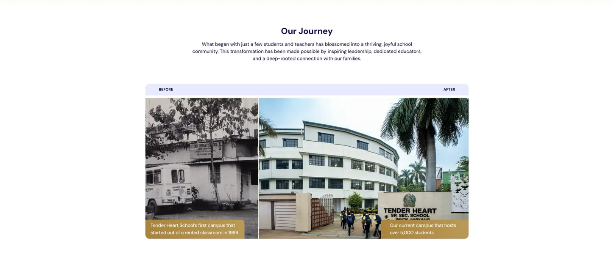
Nishtha, Sadbhavna, Veer, Dheer, Gyaan and Srijan each got a colour and a named value. The banner shape is drawn once and recoloured, with the tree pattern embossed into the field — so a new house can be added without new artwork.
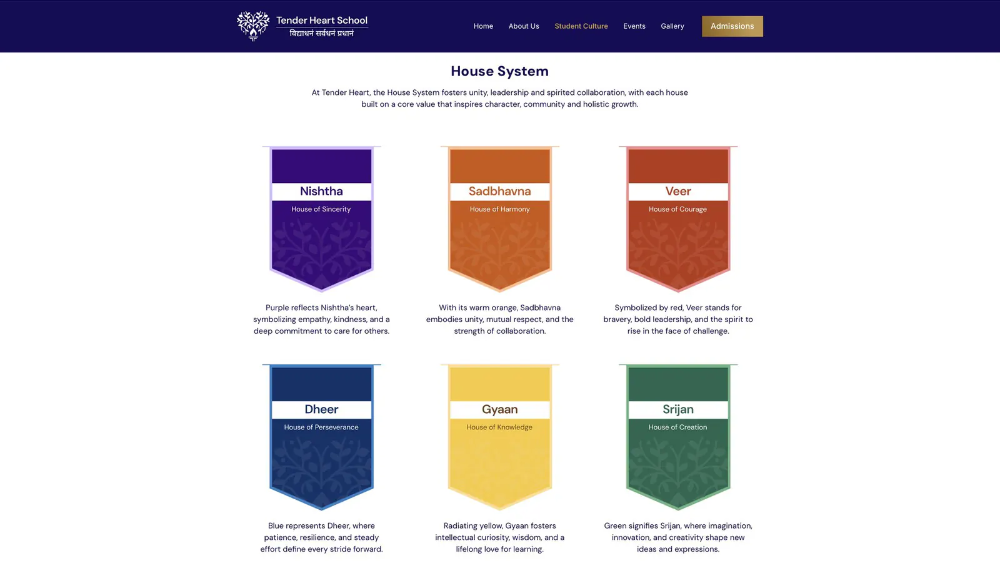
No staging, no hired extras. Morning assembly, the mosaic wall, the nursery playground, NCC drill and the basketball squad — the film and the stills come from the same shoot, so the site and the campaign look like one school.
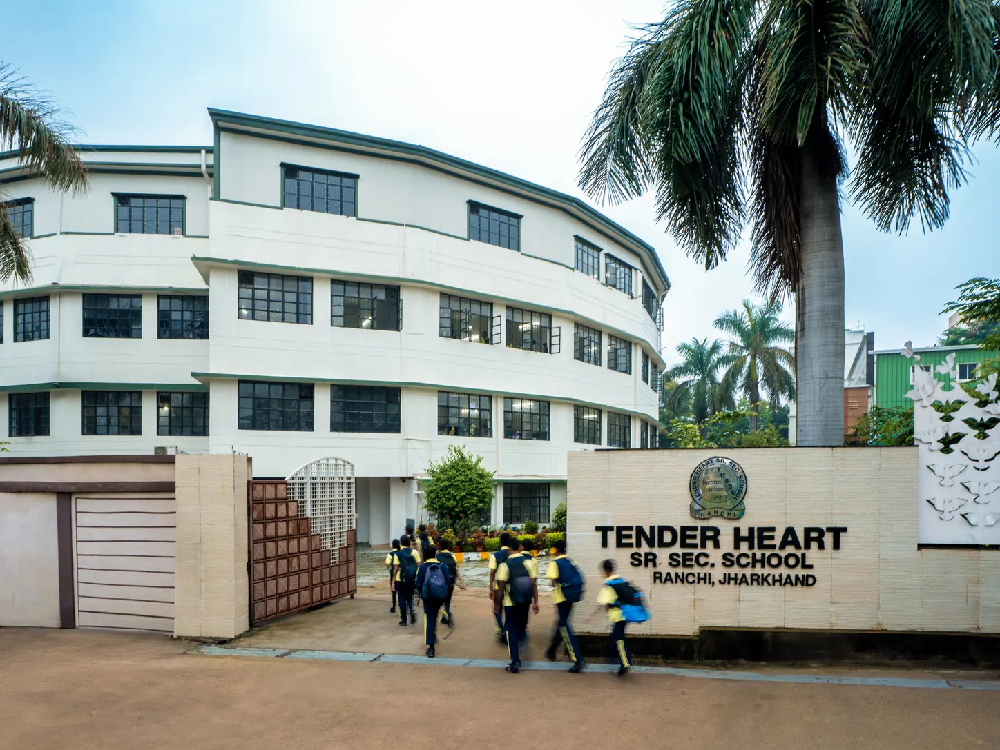
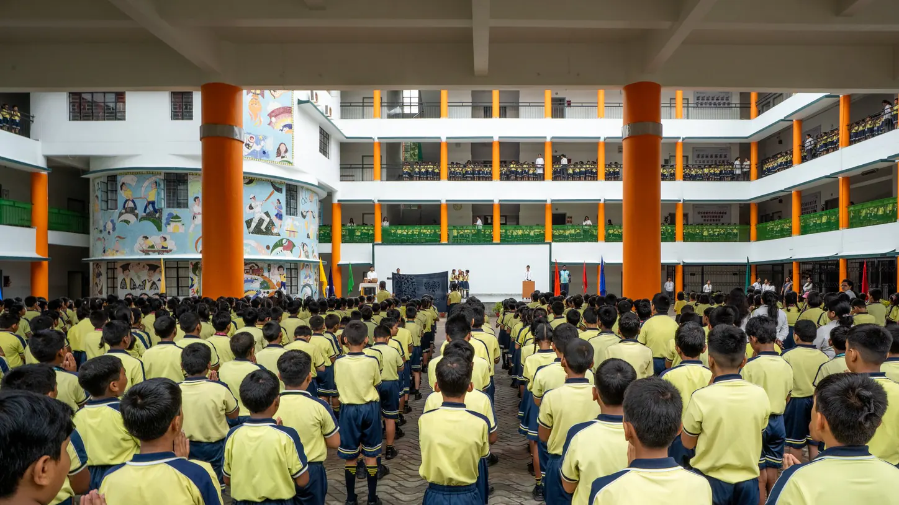
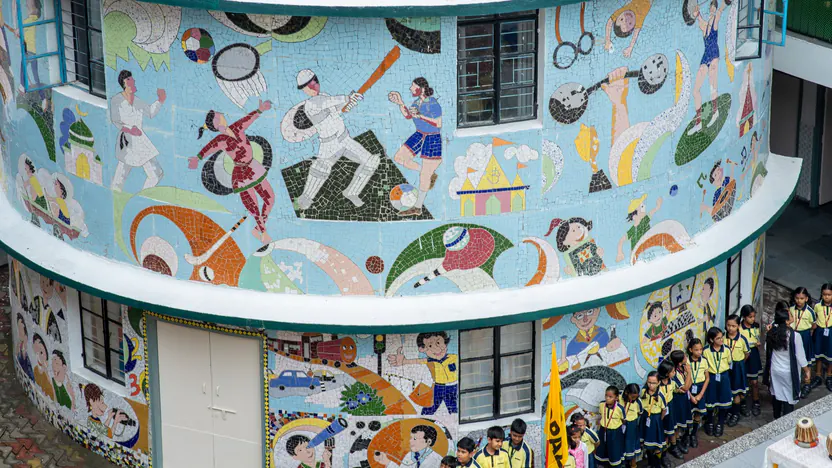
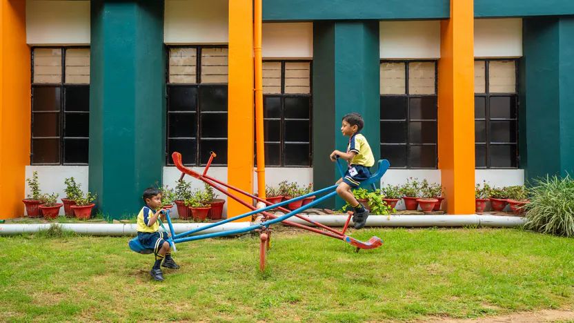
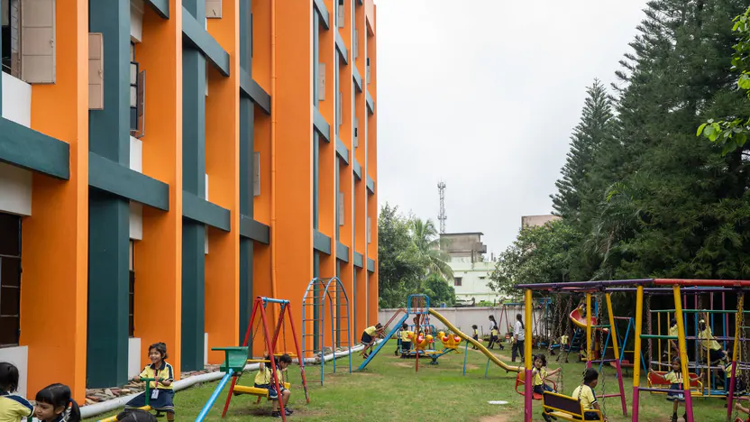
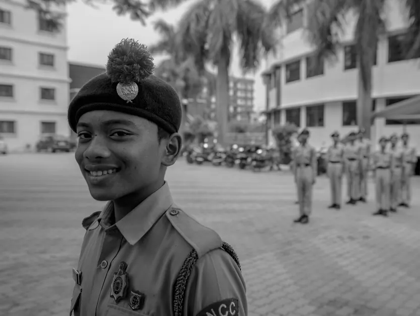
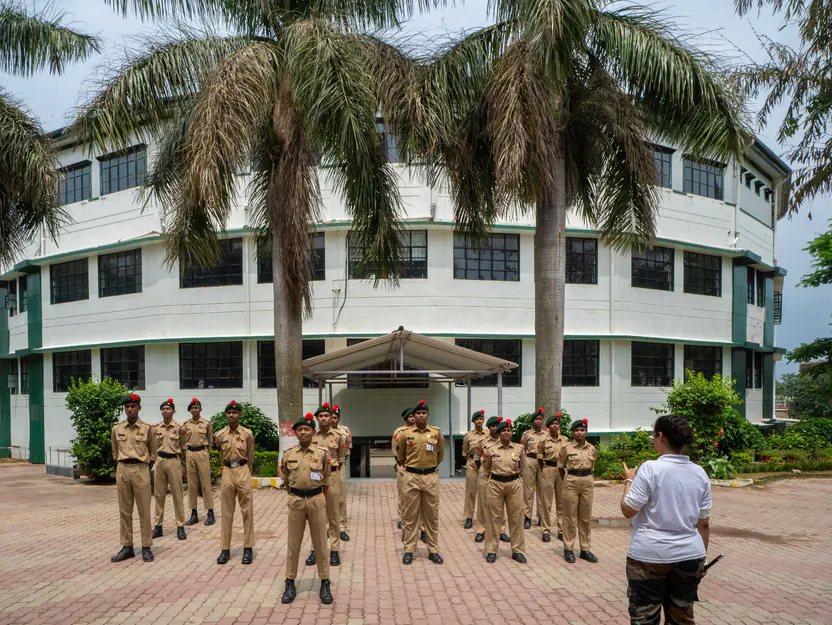
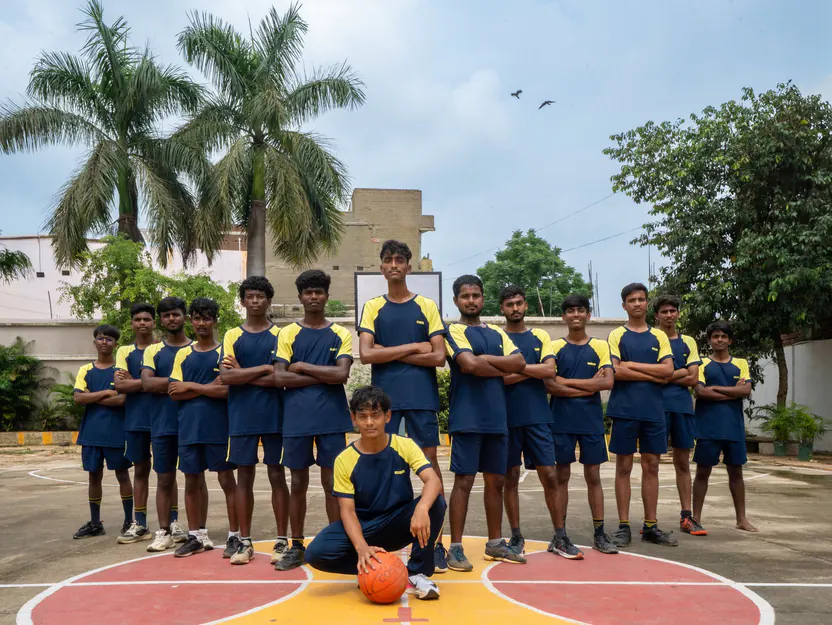